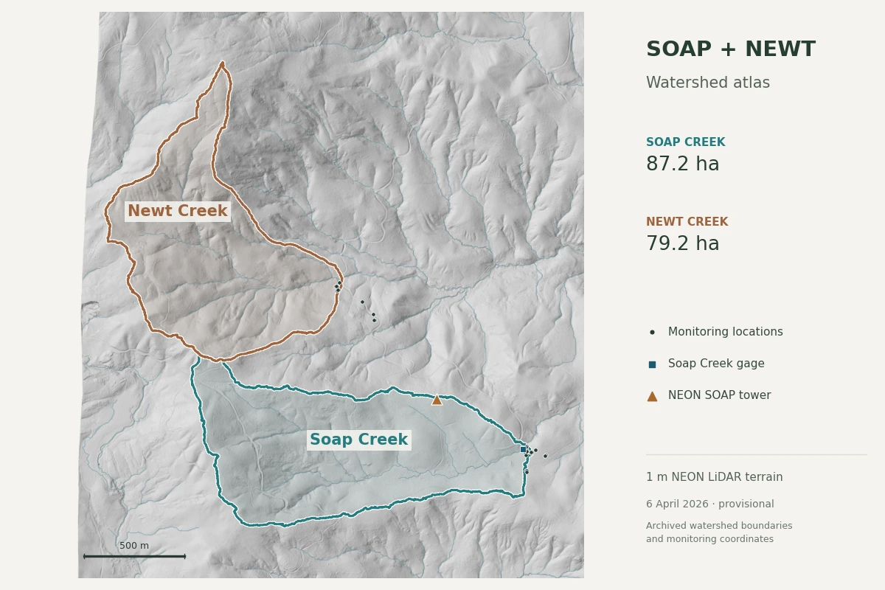

Water above and below ground.
Explore the monitoring record from two neighboring watersheds near Soaproot Saddle. Compare groundwater and stream measurements, examine the NEON meteorological record, and locate the instruments in the field atlas.
Research archive + NEON observations
Loading observation dates…
Published tower measurements
These are the latest valid samples in the downloaded NEON files, not real-time readings. Choose their variables in the chart below for daily summaries.
Monitoring record
Select a variable and series to inspect the record.
Latest available tower data
NEON observations are published in batches. The availability check below does not imply a live data connection or recent field conditions.
Field atlas

Watershed boundaries, monitoring locations, elevation contours, canopy height and a metric 3D terrain view.
Explore the watersheds →What these records support
Groundwater is depth below ground, positive downward. Gage pressure head is not discharge. Salt-dilution measurements remain discrete observations; no rating curve or continuous discharge record is inferred. Missing values remain gaps.
Data sources, processing and omitted records
Archived time-series bundle · Discharge observations with source flags · Research archive (access required)